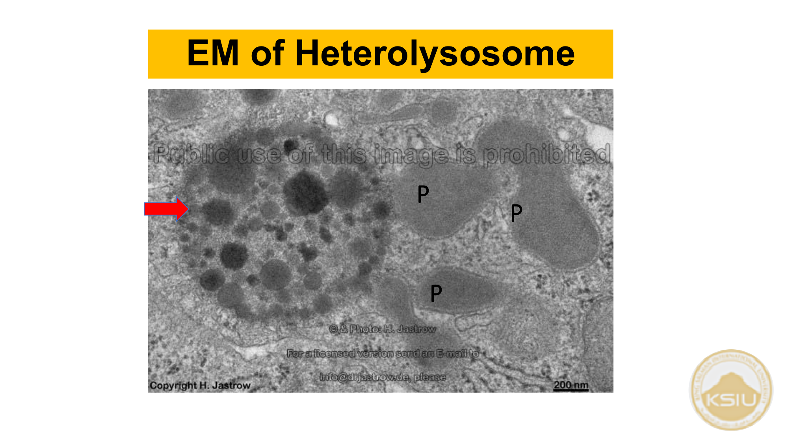
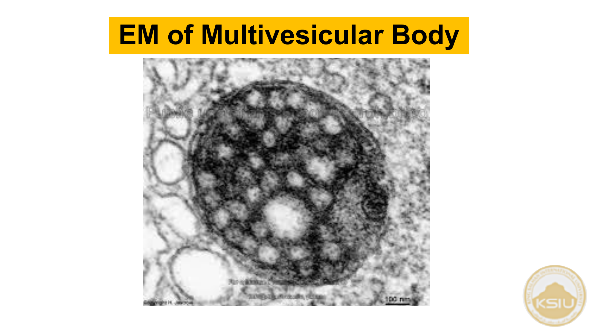
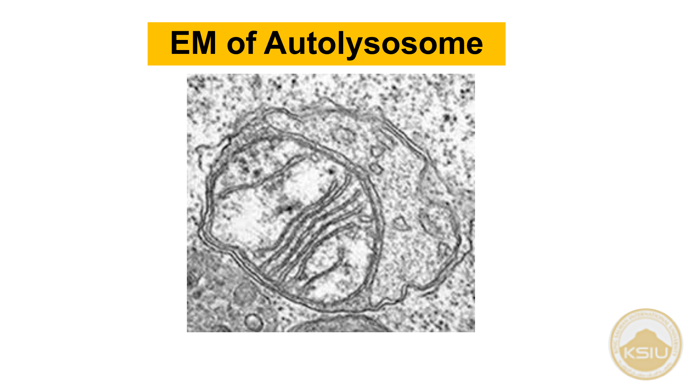
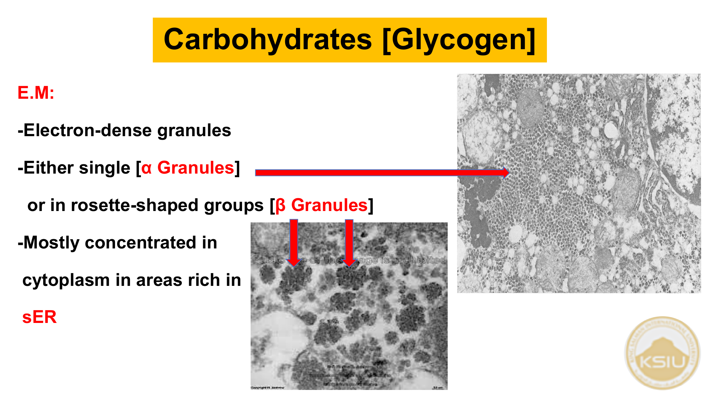
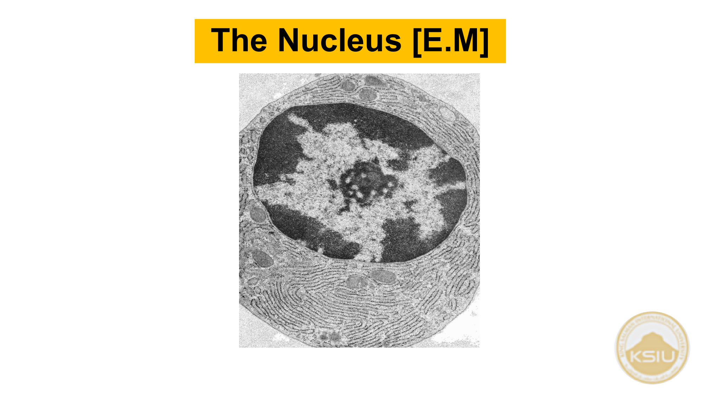
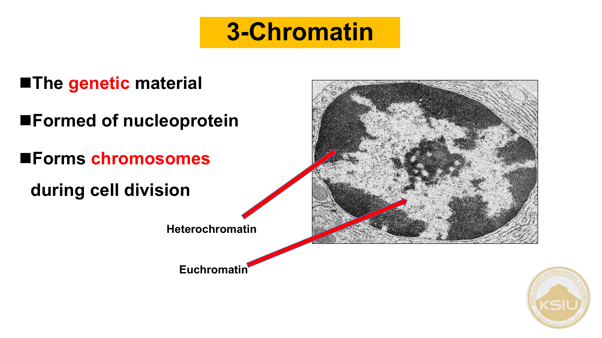

| عضيات غشائية Membranous | عضيات لا غشائية Non-membranous |
|---|---|
|
• Cell membrane • Mitochondria • Endoplasmic reticulum (rough & smooth) • Golgi apparatus • Lysosomes |
• Ribosomes • Cytoskeleton : a) Microtubules (Centrioles & Cilia ) b) Filaments (Thin, Intermediate & Thick) |
| النوع | كيف يتكون؟ | العملية الخلوية المرتبطة |
|---|---|---|
| Heterolysosomes | اندماج ليسوسوم أولي + طعام صلب أو بكتيريا التهمتها الخلية | Phagocytosis (البلعمة) |
| Multivesicular bodies | اندماج ليسوسوم أولي + قطرات سائلة ممتصة | Pinocytosis (الشرب الخلوي) |
| Autolysosomes | اندماج ليسوسوم أولي + عضيات مسنة ميتة (ميتوكوندريا، rER) | Autophagy (الالتهام الذاتي) |
| Residual bodies | ليسوسومات ثانوية تحوي فضلات غير قابلة للهضم (Indigestible remnants) | تطرد بـ Exocytosis أو تترسب |
| صبغات داخلية المنشأ Endogenous | صبغات خارجية المنشأ Exogenous |
|---|---|
|
• Hemoglobin : في كرات الدم الحمراء RBCs. • Melanin : في الجلد والشعر والعين. • Lipofuscin granules : في الخلايا المعمرة (الخلايا العصبية وعضلة القلب). |
• جزيئات الكربون والغبار: تبتلعها خلايا الغبار الرئوية (Dust cells ) مسببة رئة سوداء (Black lungs ). • Carotene : صبغة الجزر تعطي دهناً أصفر. • Tattoo marks : صبغات كالحبر الهندي (India ink ) تبتلعها الخلايا الأكولة بالجلد. |
| وجه المقارنة | الكروماتين النشط Euchromatin | الكروماتين المكثف Heterochromatin |
|---|---|---|
| بالمجهر الإلكتروني (E.M) | مادة ممتدة محببة بدقة (Extended finely granular) | كتل خشنة كثيفة للإلكترونات (Coarse electron-dense) |
| بالمجهر الضوئي (L.M) | شاحب الزرقة (Pale basophilic) | داكن الزرقة (Dark basophilic) |
| نشاط الجينات | يحمل جينات نشطة لتصنيع البروتين (Active genes) | يحمل جينات خاملة غير مفعلة (Inactive genes) |
| نوع الخلايا السائد فيها | يسود في الخلايا النشطة (Active cells) | يسود في الخلايا غير النشطة (Inactive cells) |
هذه هي الشرائح المجهرية الفعلية الواردة في تدريبات المحاضرة (الشرائح 34 إلى 59) مع التشخيص والتعليق النموذجي:






اختبر فهمك لمفاهيم المحاضرة مع تصحيح فوري وتوضيح لسبب الإجابة:
استمع للنطق الصوتي النقي باللغة الإنجليزية لأي مصطلح ورد في المحاضرة بنقرة واحدة: